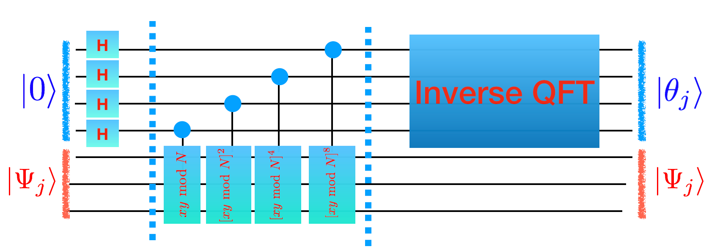
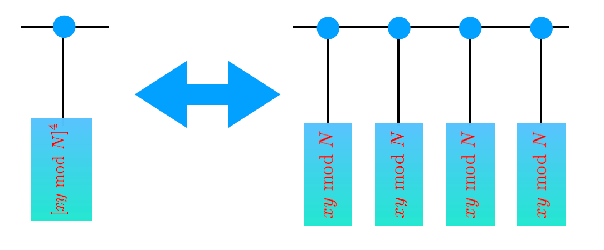

Shor’s Algorithm#
You now have all the pieces for Shor’s algorithm. You have code that generates phase estimation for an arbitrary unitary and you have a unitary (\(xy \textrm{ mod } N)\) whose eigenvalues give you the period you are looking for.
You just need to put them both together.
 
A couple comments:
If \(n=\lceil \log_2(N) \rceil\) then you need \(2n+1\) (not sure about the plus 1) bits of accuracy for the phase to have the continuing fractions algorithm guarantee that it gives you the correct thing.
You’re going to want to debug by first eating an eigenvector \(\Psi_j\) on the blue wires. After you have this working you can use a general state. A good choice is \(|00...0001\rangle\) which has an equal overlap with every eigenstate! (understand why this is). This gaurantees that you can’t end up on a bad eigenstate with a phase that doesn’t work too often.
Grading
Show that your quantum computer factors!
Improving Shor’s algorithm#
There’s one more major thing we need to worry about. We wrote this classical simulator but didn’t yet think too hard about how fast the algorithm is. Have your code generate circuit descriptions for large values of \(N\) (don’t try to run them through your simulator). Graph how quickly these grow with \(N.\) Is this good enough? If not, how do we fix it?
Grading
Show that your simulator runs faster with the sped-up version.
Congratulations: You now have a simulator that simulates Shor’s algorithm.